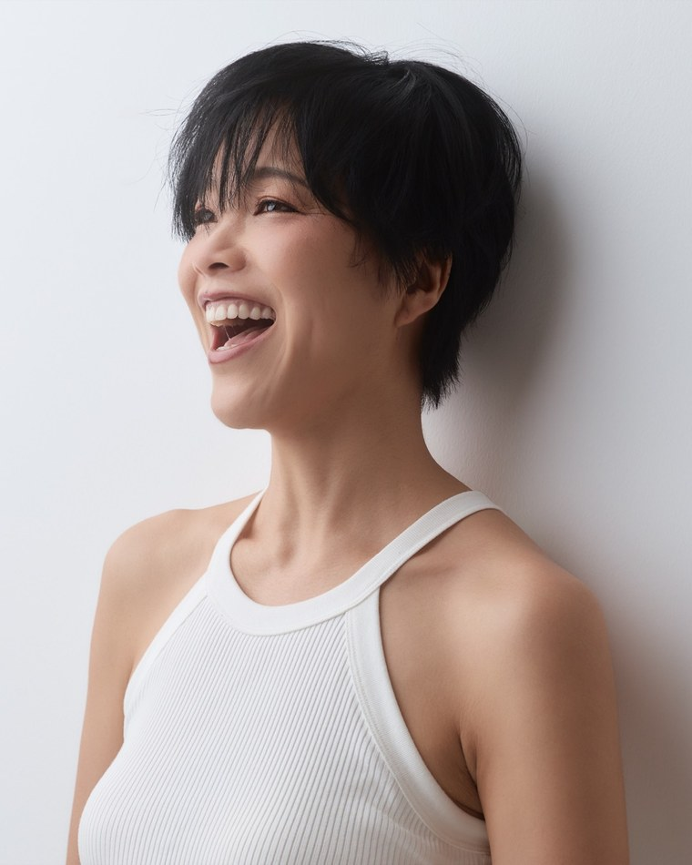

はじめまして、
レムケなつこです。
私はドイツに住んで約17年になります。
いまは南ドイツ・バイエルン州で暮らしながら、オーガニック教育に携わっています。
20代の頃、私はJICA青年海外協力隊としてボリビアで活動していました。そこで目の当たりにしたのは、出稼ぎ労働者が搾取されている現実でした。
帰国後、私はあることに気づきました。ボリビアで出会った、現代奴隷とも言われる貧しい人々が、サトウキビの生産に関わっていたのです。そして、そのサトウキビから作られた白砂糖を、私自身も消費していたのです。
「なんとかしたい」。
そう思って学術論文を読み漁るうちに、「オーガニック」という仕組みに出会いました。その後、ドイツへ渡って研究を重ねました。
私が授業で
大切にしている言葉は、
「正しさより、
続けられる選択をする」です。
私は、どんな選び方が正しいかを決めつけず、オーガニックが大切にしていることを分かりやすくお話しします。
私の経歴
- ✓
現地国費でドイツの大学院で有機農業を学び、修士号を取得。
- ✓
ドイツ法人オーガニックビジネス研究所（IOB）代表。オーガニックスクールを運営。創業7年で延べ1,900人以上が学ぶ日本最大級のコミュニティに。
- ✓
大手オーガニックスーパー「ビオセボン」の年間成長研修（従業員300名以上）を担当（2026〜2027年）。
- ✓
著書『社会のために生きたいあなたへ
オーガニック入門書』Amazon Kindle1位獲得。
先日、この無料授業とは別のオンライン講座を行いました。その講座の振り返りシートでは、回答16件のうち10件が、次のお買い物について「見る場所が分かり、自分で選べそう」と答えました。

私が目指している社会を表す言葉は、
「オーガニックが、あたりまえ。」です。
オーガニックが少しでも気になっている方は、まずはこの無料授業を気軽に見てみてください。